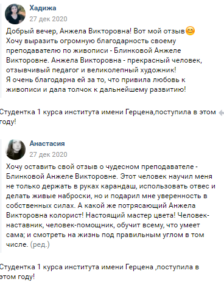
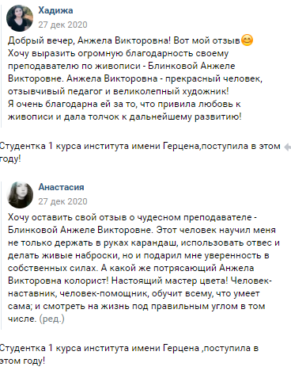
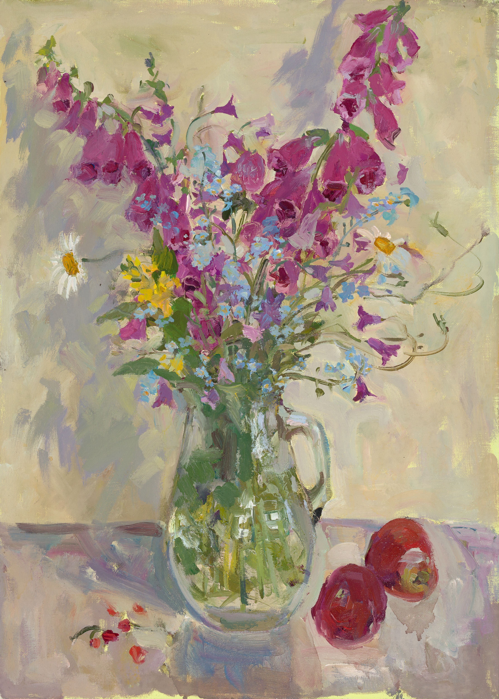

Анжела Викторовна Блинкова родилась в Рязани. В 1996 году окончила Рязанское художественное училище имени Вагнера. С 1999 по 2006 год училась на факультете живописи Академии художеств имени И. Е. Репина. С 2011 года преподает в Санкт-Петербургском художественном училище имени Н.К. Рериха.
С 2007 года Анжела Викторовна – член союза художников Санкт-Петербурга и постоянная участница ежегодных выставок. Она принимала участие в выставках: «Пушкинские Горы» (институт им. И.Е Репина, 2000 год), выставке пейзажей (г. Псков, 2001 год), «Ученики академии художеств» (г. Калуга, 2001 год), в выставке молодых художников «Современное молодёжное искусство» (г. Хельсинки, 2002 год), «Русская академическая живопись» (г. Пекин, 2005 год), в международной выставке в Пекине в центральном выставочном зале Го Мао.
А. В. Блинкова участвовала в восстановлении росписей кафедрального собора в Смоленске. Художница неоднократно совершала творческие поездки с целью создания своих работ (Тибет, Алтай, Приполярный Урал, Крым).
Работы Анжелы Викторовны находятся в музее города Борисова, музее-заповеднике «Горки Ленинские», в частных коллекциях России, Канады, Китая, Южной Кореи, Америки, и Финляндии.
Новые Картины

Розы
холст масло

Розы
холст масло

Розы
холст масло
 

Услуги
Картины на заказ
Вы можете заказать картину. Чаще всего мне заказывают портреты. Вы можете заказать парадный портрет в духе аритсокартических семей, или что то современное.
Вы можете сделать раскошный подарок на юбилей или просто так.
Заказать картину
Готовые картины
Вы можете купить готовую картину. Если вам что то порнравилось, вы можете заказать готовую картину.
Галерея